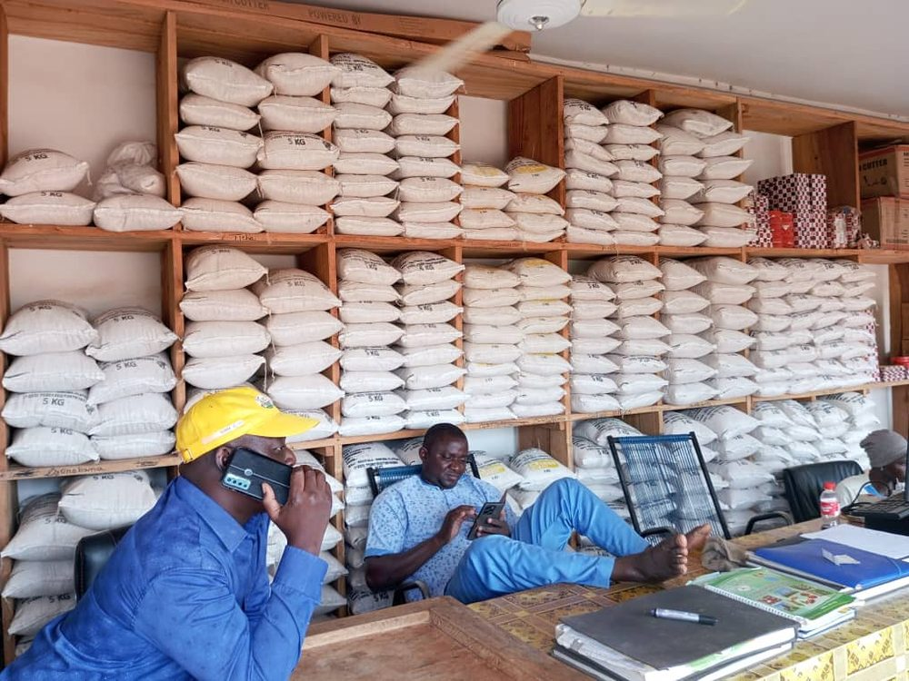
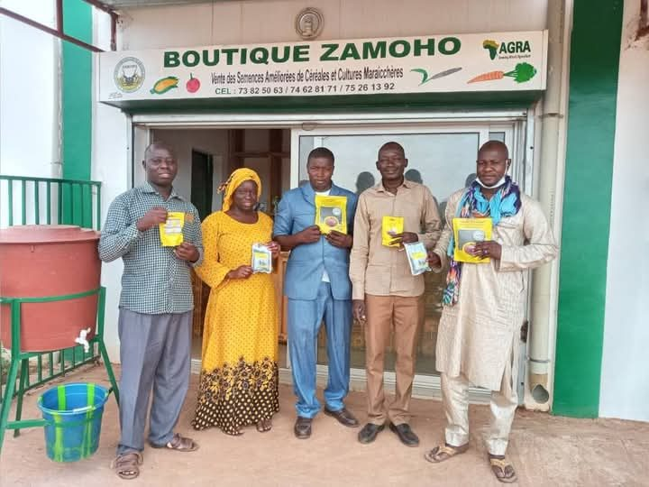
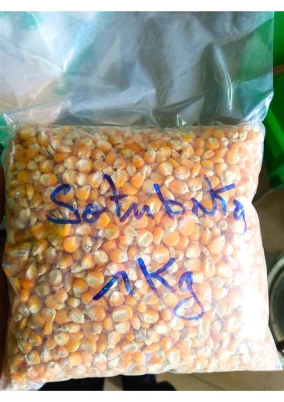
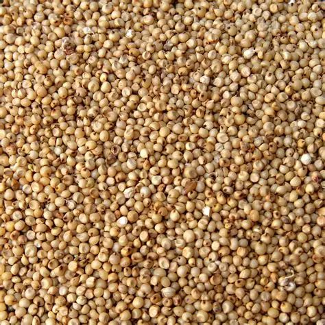
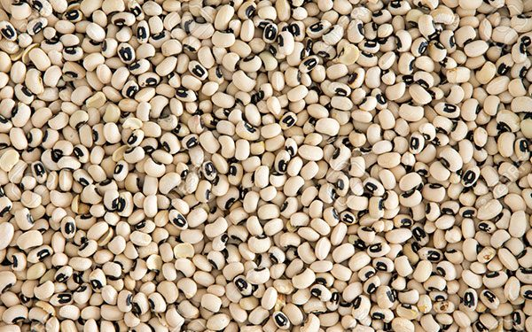
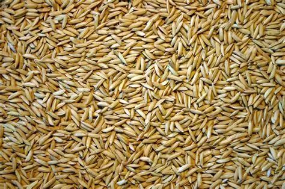

Commercialisation & mise en marché
Un réseau de distribution efficace pour mettre les produits agricoles à la portée de tous
Votre partenaire commercial de confiance
ZAMOHO dispose d’un réseau de points de vente ruraux et urbains pour distribuer des semences certifiées, des intrants et des céréales de consommation. Nous accompagnons également les producteurs dans la commercialisation de leurs récoltes grâce à des partenariats avec des acheteurs et des transformateurs. Notre équipe assure le suivi des revendeurs et garantit la qualité des produits jusqu’au consommateur final.


24 points de vente
Magasins et dépôts répartis à Koutiala, Sikasso, Bougouni et dans les zones rurales.
Livraison directe
Transport des semences et intrants jusqu’aux producteurs via nos tricycles et véhicules.
Réseau de revendeurs
194 revendeurs actifs formés pour conseiller et servir les agriculteurs.
Mise en relation
Appui à la commercialisation des céréales de consommation avec des acheteurs régionaux.
Produits commercialisés

Semences de maïs
Variétés Sotubaka, Soden, Tcheba, Blema Coura : rendements élevés.

Semences de sorgho
5 variétés adaptées aux zones sèches, résistantes aux maladies.

Semences de niébé
8 variétés à haut rendement, résistantes à la sécheresse.

Semences de riz
Variétés AfricaRice, RP4 : adaptées aux bas-fonds.
« Grâce au réseau de vente de ZAMOHO, j’ai toujours des semences de qualité à proximité de mon village. Les revendeurs sont bien formés et me conseillent selon ma parcelle. »
Zones d'intervention
- Koutiala
- Sikasso
- Bougouni
- Ségou
- Kita
- Dioïla
- Kati
Devenez revendeur ou passez commande
Intégrez notre réseau de distribution ou bénéficiez de nos produits directement à votre magasin.
Contactez notre équipe commerciale